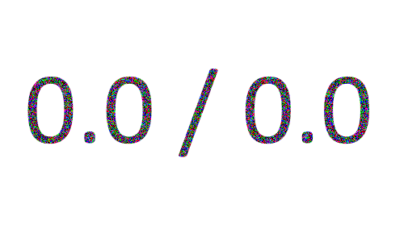
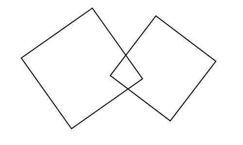

Рассказ о различиях в программных реализациях простых математических операций, отвечающих на вопрос: «Какое из двух значений с плавающей точкой больше» (или меньше).
Связанные с float реализации Min и Max различаются, и в большинстве случаев их поведение не соответствует
стандарту IEEE-754–2008 (IEEE Standard for Binary Floating-Point Arithmetic).
Рассмотрим следующий пример наивной обобщённой реализации Max на JavaScript:
function Max(a, b) {
if(a > b) {
return a;
} else {
return b;
}
}Эта реализация некорректна во многих отношениях:
- Она не обрабатывает случаи -0 +0 (+0 должен быть больше -0);
- Она не обрабатывает аргументы и их количество согласно спецификации JavaScript (случаи -Infinity / +Infinity)
И самое интересное:
- Она не умеет правильно обрабатывать значение NaN (Not-a-Number)

Но как же правильно обработать ситуацию с NaN, когда a равно NaN, или b равно NaN, или и a, и b равны NaN. Как только мы используем числа с плавающей точкой, мы можем найти цитаты из стандарта IEEE, а затем найдём определения операций minNum и maxNum,
которые предпочитают числа значениям NaN, так что Max(NaN, число) = Max(число, NaN) = число.
Но не так уж много современных IEEE-совместимых реализаций.
Библиотеки с обработкой NaN, совместимой с IEEE 754–2008,
где Max(NaN, число) = Max(число, NaN) = число:
язык C, начиная с C99 http://en.cppreference.com/w/c/numeric/math/fmax
Библиотеки с обработкой NaN, несовместимой с IEEE 754–2008,
где Max(NaN, число) = Max(число, NaN) = NaN:
- ECMAScript,
спецификация http://www.ecma-international.org/ecma-262/5.1/#sec-15.8.2.11 и реализация V8 https://github.com/v8/v8/blob/cd81dd6d740ff82a1abbc68615e8769bd467f91e/src/js/math.js#L77 - .NET (C#, F# и другие, использующие модуль Math, оператор max для F#)
https://github.com/dotnet/coreclr/blob/bc146608854d1db9cdbcc0b08029a87754e12b49/src/mscorlib/src/System/Math.cs#L381
Примеры библиотек, бросающих исключения при аргументах-NaN:
- Ruby (есть методы max/min, определённые на Enumerable, стандартных реализаций Max/Min нет),
бросит «comparison of Float with NaN failed». Но класс NaN всё ещё float. Более старые версии интерпретатора ruby могут бросить исключение «comparison of Float with Float failed».
Некоммутативное поведение
где Max(число, NaN) не равно Max(NaN, число)
Swift, Haskell, OCaml
Обходные пути существуют.
Заключение
Похоже, что большую часть времени нам следует гарантировать, что все аргументы функций Min/Max не являются NaN, потому что результаты могут быть испорчены другим аргументом в зависимости от реализации Min/Max.
Стандарт IEEE определяет эталонное поведение, но чаще всего в современных языках вы увидите другое.
Почему?
- Похоже, потому что нет другого способа получить источник ошибки в результате, кроме исключения. А исключения считаются медленными;
- Инженеры делают стандартные библиотеки, глядя на реализации других стандартных библиотек;
- Сам pdf со стандартом недоступен бесплатно.
- Обобщённая реализация «одна на всех» выглядит привлекательно.
- Это краевой случай, который большую часть времени не важен для разработчиков. Нам остаётся просто сидеть и ждать, пока проблема не ударит.
p.s. Есть ещё краевой случай (± Infinity, NaN).
Хотя записи стандарта об операциях с float доступны, лучше сначала прочитать спецификацию языка [ваш_любимый_язык_программирования].

Изначально опубликовано на Medium: https://medium.com/@nettsundere/the-implementation-of-min-and-max-operations-for-floating-point-types-80d3616c084d